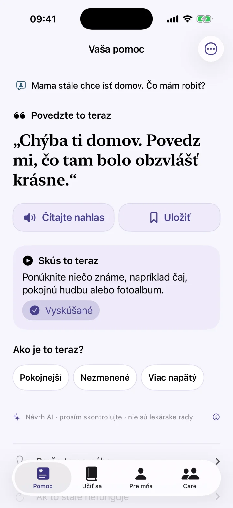
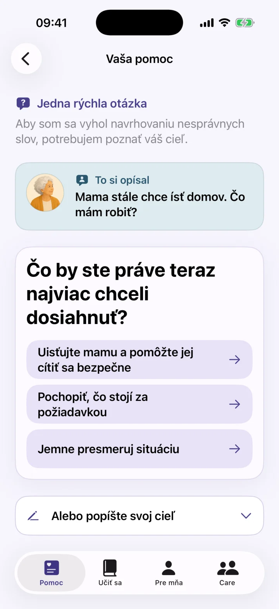
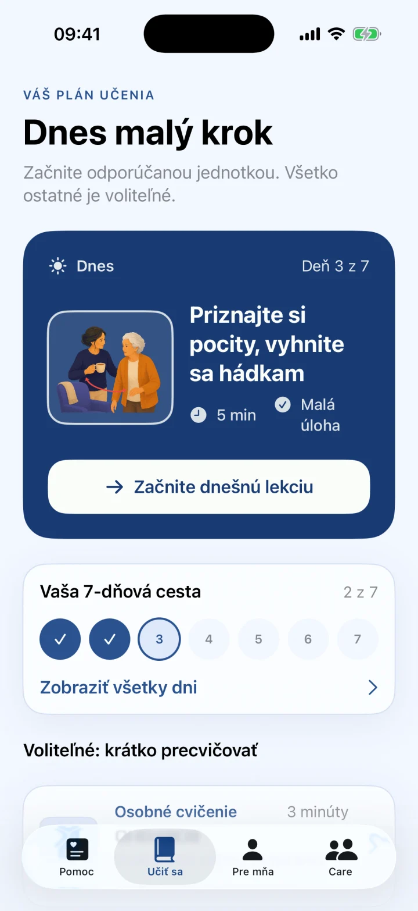
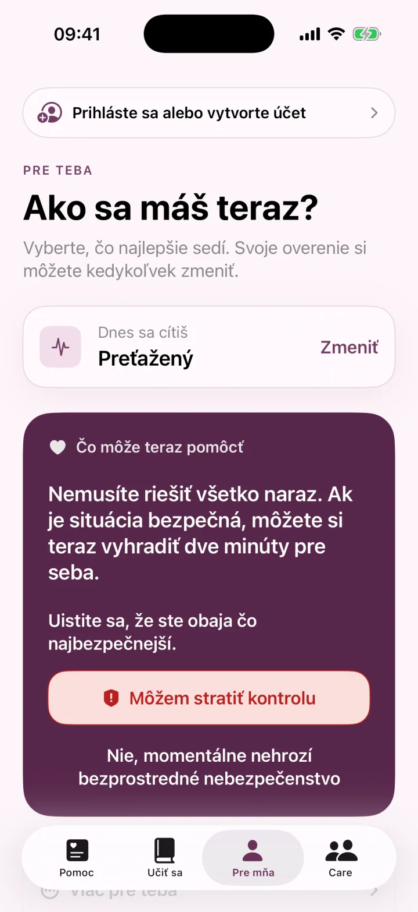

Okamžitá pomoc, keď chýbajú slová
Keď neviete, čo povedať, získajte upokojujúcu vetu, malý ďalší krok a jasné usmernenie pre náročné chvíle pri demencii.
- Nie je náhradou lekárskych rád ani miestnych pohotovostných služieb.

Okamžitá pomoc
Učiť sa
Sebaopatera
Okamžitá pomoc a osobný 7-dňový plán na ťažké chvíle s demenciou.
Keď neviete, čo povedať, získajte upokojujúcu vetu, malý ďalší krok a jasné usmernenie pre náročné chvíle pri demencii.



Vety a ďalšie kroky
Dementia Coach podporuje rodinných opatrovateľov osoby žijúcej s demenciou. Stručne opíšte situáciu a získajte možnú upokojujúcu vetu, malý ďalší krok a zrozumiteľné vysvetlenie.
- Rýchla pomoc v stresujúcich situáciách
- Bežné chvíle, ako opakované otázky, večerný nepokoj alebo osobná hygiena
- Krátke lekcie a osobný 7-dňový plán
- Uložené vety, hlasový vstup a čítanie nahlas
- Krátke zastavenie pre opatrovateľa
Nie je náhradou lekárskych rád ani miestnych pohotovostných služieb.
Dementia Coach je nástroj na komunikáciu a každodennú podporu. Nestanovuje diagnózy a nenahrádza lekársku, ošetrovateľskú, psychologickú ani núdzovú pomoc. Návrhy AI a pripravený obsah môžu byť neúplné alebo nevhodné. Vždy ich posúďte podľa osoby, situácie a odborných odporúčaní.
Vety a ďalšie kroky
Podpora komunikácie pre rodinných opatrovateľov osôb s demenciou.